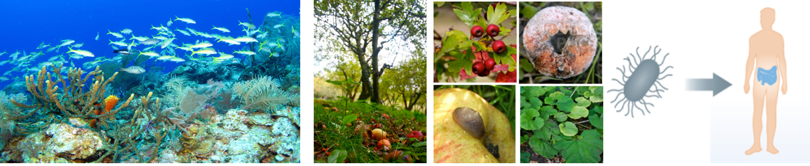
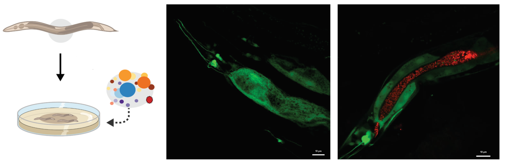
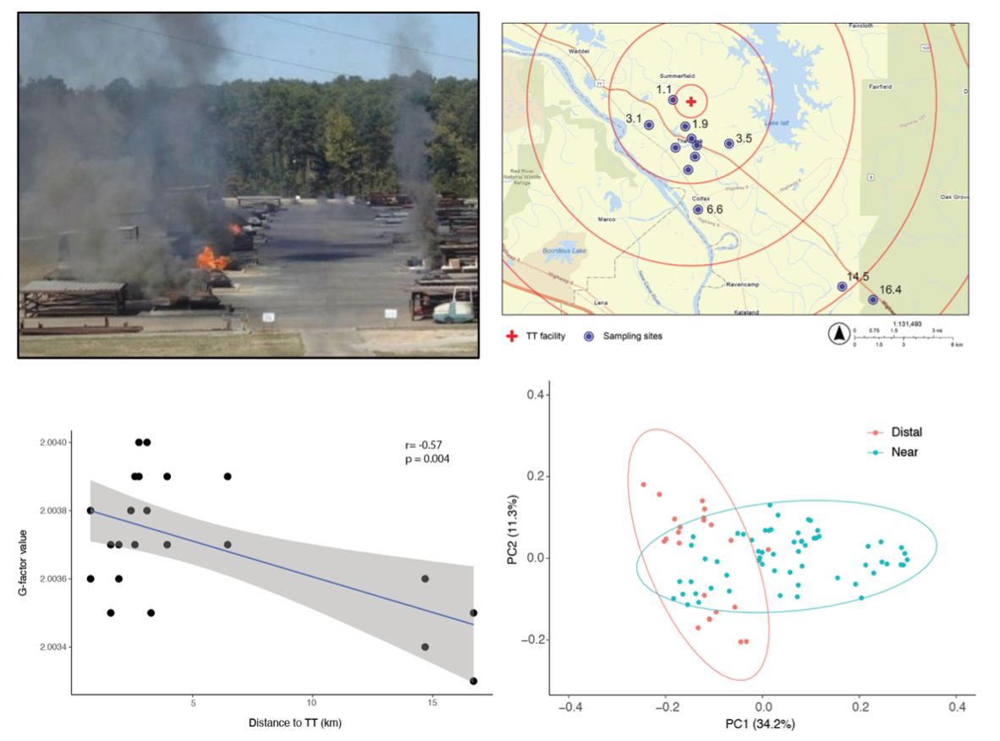

Our research integrates environmental microbiology and systems biology to uncover how microbial communities and environmental stressors influence physiology, aging, and host–microbe interactions.

Animals live in close association with diverse microbial communities that profoundly influence their health, development, and fitness. Our research seeks to understand how naturally associated microbes communicate with their hosts to regulate growth, reproduction, aging, and stress responses.
Using the nematode Caenorhabditis elegans and its natural microbiome as a model system, we investigate the molecular mechanisms underlying microbiome–host interactions. Our work has revealed that different bacterial species can dramatically reprogram host physiology and shape key life-history traits, including reproduction, lifespan, and healthy aging.
A major focus of our research is understanding how microbial signals influence host endocrine pathways, particularly insulin-like signaling, to modulate health and fitness. To address these questions, we integrate genomics, genetics, microscopy, transcriptomics, and synthetic microbial communities.
By uncovering the molecular basis of microbiome–host communication, our long-term goal is to develop predictive models of host–microbe interactions and identify microbial mechanisms that can be harnessed to promote health, resilience, and healthy aging.


Human and environmental health are increasingly influenced by exposure to complex chemical pollutants. Our research investigates how environmentally persistent free radicals (EPFRs)—highly stable radicals generated during combustion and hazardous waste treatment processes—affect microbial communities, organismal physiology, and the aging process.
At the ecosystem level, we examine how EPFRs alter the structure and function of soil microbiomes through field and laboratory studies of microbial communities surrounding hazardous waste treatment facilities.
At the organismal level, we use Caenorhabditis elegans as a model system to determine how EPFR exposure impacts health and aging. Our work focuses on how chronic free-radical stress disrupts cellular homeostasis, mitochondrial function, stress-response pathways, and host–microbiome interactions.
By integrating environmental microbiology, toxicology, and aging biology, we seek to uncover the mechanisms by which EPFRs influence biological systems across scales—from soil microbial communities to whole-animal physiology.